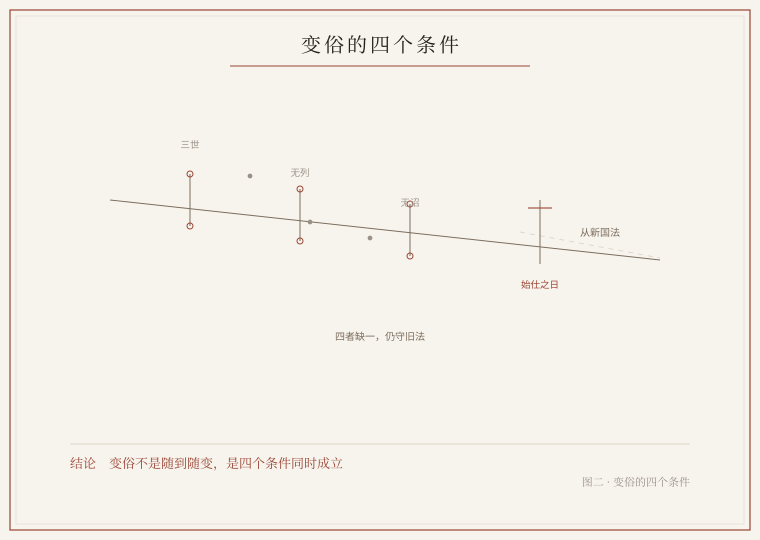

曲礼下 · 二·十三 · 第 136 课
去国三世，本国既不为立后，吉凶亦不相告，则自出仕新国之日起，一切礼俗改从新国之法。注「以故国与己无恩」。
说什么事：去国三世，爵禄无列于朝，出入无诏于国，唯兴之日，从新国之法。
落在哪一层：礼。讲「恩断」与「法从」的先后。
为何编在此位：上节是全其恩，此节是断其恩。两句合看，才见礼的时间算法。
【经】去國三世，爵祿無列於朝，出入無詔於國，唯興之日，從新國之法。
【注】以故國與己無恩。興謂起為卿大夫。
【疏】「唯兴之日，从新国之法」者，唯兴谓已始仕也。虽有宗族相告，已仕新国，而本国无列无诏，故所行礼俗，悉改从新也。然推此而言，若本国犹有列诏者，虽仕新国，犹行故俗。……又若无诏而不仕新者，不得从新。何以知然？既云「唯兴」，明不兴则不从。
无列于朝 本国不再为其族立后，朝中无位。
无诏于国 吉凶之事不再相告。与上节「有诏」正对。
唯 限词。只在此一日，此前不从。
兴 注「起为卿大夫」。疏「兴谓已始仕也」。为士则犹卑，不得变本。
从新国之法 所改者是礼俗法度，非籍贯身份。
以故国与己无恩 注一句，是全节之由。无法从新，是恩已断。
离国已三代，朝中不再为你留位、国中不再与你通吉凶，那么到你出仕新国的那一天，才改从新国的法度。
变俗不是随到随变。要三个条件同时到位：三世、无列、无诏；再加一个时点：始仕。四者缺一，仍守旧法。礼在此把「 assimilation 」写成了一道有严格条件的算式。
第一层 恩在法则在 注四字「以故国与己无恩」，把礼俗的归属系于恩义，不系于地理。
第二层 唯兴之日 这一日是全节的枢。不仕则不从，为士则不从，必待起为卿大夫。位到那里，责任到那里，法才随之。
第三层 疏之推演 疏推两层：本国犹有列诏者，虽仕新国犹行故俗；无诏而不仕新者，不得从新。可见此节不是单向的「归化」，是有条件的切换。
第四层 与上节合为一线 上节「有列有诏」则守，此节「无列无诏」则从。二节共用一条时间线、一条关系线，只差两个条件的有无。
与今日何干 入籍、入职、入伙，何时开始按新规矩办事，从来不是「来了就算」，而是「担了责才算」。这一日的分寸，古人算得比我们细。
| 左 | 右 |
|---|---|
| 去国三世 | 时间条件 |
| 爵禄无列于朝 | 关系条件一 |
| 出入无诏于国 | 关系条件二 |
| 唯兴之日 | 时点条件 |
| 从新国之法 | 四者俱备，乃改 |
| 以故国与己无恩 | 法之所属，系于恩 |
画一条自左上贯右下的长轨，轨上设三枚闸片（示意三道条件），每片皆半开；轨的中段分出一条岔道，岔口前画一只小小的开关，开关旁一道短竖线标示「始仕」的时点。左段轨道上残存几点旧痕（示意旧法），右段轨道洁净无痕（示意新法）。闸片与岔口之间以极淡的虚线相连。不写文字。赭色只用在岔口那只开关上。
